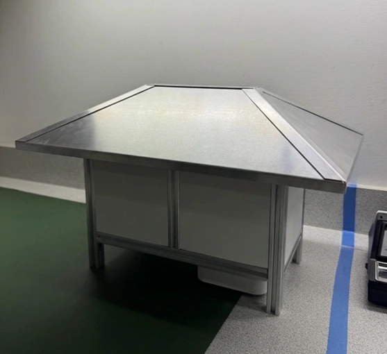
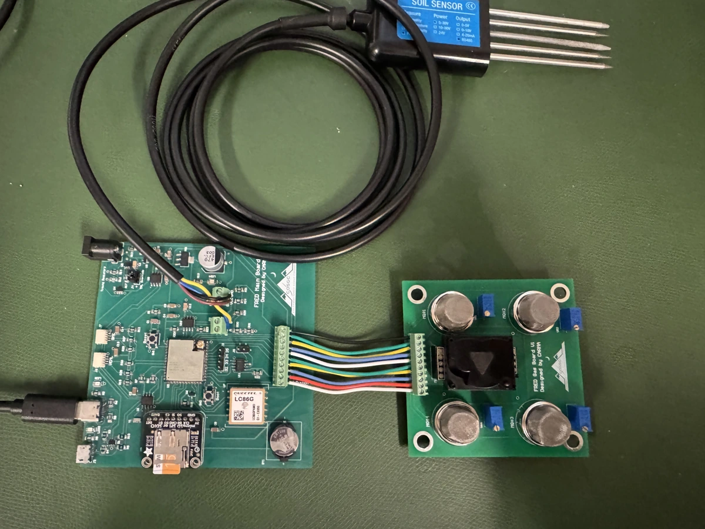

Environmental sensing
Field Recorder for Environmental Data (FRED)
This summer I worked on the development of FRED, a battery-powered environmental monitoring system designed for long-term, unattended field deployment. My work included designing the custom ESP32-S3 PCB in Altium Designer, assembling and testing the hardware, developing the embedded firmware, and building the pod's custom enclosure.
FRED collects soil off-gassing measurements alongside environmental data, including ambient light, temperature, humidity, and soil-probe readings. The system integrates multiple sensors and peripherals using I2C, SPI, UART, and RS-485/Modbus communication interfaces.
To minimize power consumption, a dedicated hardware timer controls the sampling cycle. At predetermined intervals, the timer powers on the ESP32-S3 to collect sensor measurements and log the data before shutting the system down. This approach reduces battery consumption between measurements, allowing for extended unattended field operation.
Measurements are stored in JSON format on an SD card, with GPS coordinates recorded to associate the collected data with its sampling location.

